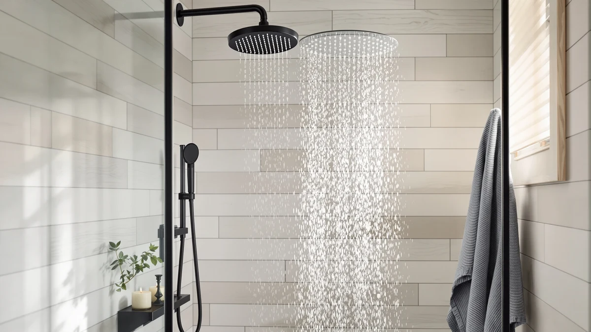

The Best Low-flow Shower Heads (2026)
Prices and picks verified as of September 2026. Independent, reader-supported reviews.


Quick Answer
The best low-flow shower head for most bathrooms is the Isslly 4pcs Shower Head Flow Restrictor set, because it lets you choose between four flow rates, 1.2, 1.5, 1.8, or 2.0 GPM, on almost any existing shower head for $6.29. If you want a complete fixed-and-handheld system at a documented water-saving rate instead, the Delta 5-Setting HydroRain runs at 1.75 GPM.
Our pick: Isslly 4pcs Shower Head Flow — $6.29 Check Price on Amazon
Bottom line: our top pick is the Isslly 4pcs Shower Head Flow Restrictor at $6.29. The best budget option is the Angle Simple High Flow Shower Head at $18.99.
Things to Know Before You Buy
- Federal maximum flow rate: Every shower head legally sold in the US must not exceed 2.5 gallons per minute (GPM). "Low-flow" generally means 2.0 GPM or under, and WaterSense-labeled models cap at 1.75 GPM.
- Flow restrictors aren't permanent: Most low-flow shower heads use a removable disc or washer inside the connector. Pulling it out usually pushes the flow rate back above the federal cap.
- Pressure and flow rate aren't the same thing: A 1.75 GPM head with a narrow, focused nozzle can feel stronger than a 2.5 GPM head with a wide spray pattern, because nozzle count and spray angle affect how forceful the water feels.
- Material affects longevity: Solid brass and metal shower heads resist the mineral buildup that clogs plastic nozzles in hard water areas, which matters more over years of daily use than the sticker price.
- Multi-setting heads don't hold their rating on every mode: A shower head rated at 1.75 GPM usually only hits that number on its default spray. Switching to "massage" or "power rain" can pull more water through the same head.
We compared and researched the best low-flow shower heads to find which ones cut water use without turning your morning shower into a trickle. Federal law caps every shower head sold in the US at 2.5 gallons per minute, but plenty of models get well under that ceiling while still feeling like a real shower. After comparing flow rates, spray patterns, and build quality across seven options, the Isslly 4pcs Shower Head Flow Restrictor set is our pick for most bathrooms, because it lets you dial in the exact flow you want for $6.29.
Our top pick isn't a shower head in the traditional sense. It's a set of four flow restrictor discs that snap into the connector of almost any existing head, dropping your flow to 1.2, 1.5, 1.8, or 2.0 gallons per minute depending on which color you use. That flexibility is why it beat six dedicated shower heads in this roundup, several of which only reach a low number by capping out at the legal maximum instead of going lower. If you want a full head and handheld combo instead, the Delta 5-Setting HydroRain 2-in-1 Dual runs at a documented 1.75 GPM and adds a hose-connected sprayer for cleaning tile.
Not every model here is built for someone trying to shave gallons off their water bill. The Angle Simple High Flow Shower Head has no flow restrictor at all, and we kept it in the lineup because a common pattern shows up in low-flow shopping: someone tries a restrictor, decides the weaker spray isn't worth the savings, and wants a durable head that trades some water savings for pressure. Below, you'll find seven picks broken down by price, flow rate, and who each one actually fits, plus the research behind our choices.
Why You Should Trust Us
Best Shower Heads has been comparing bathroom fixtures since 2024, and this guide is maintained by Ilane Tall, our Home & Bath Expert, who has reviewed dozens of shower heads, flow restrictors, and handheld combos for water pressure, flow rate, and build quality. For this roundup of the best low-flow shower heads, we cross-checked every listed GPM rating against the manufacturer's own specifications and flagged the one model in this lineup that ships without a flow restrictor, so you know exactly what you're buying before you click through to Amazon.
How We Picked
We started by pulling every shower head and flow-control product in our database tagged for water conservation, then narrowed the list to models with a documented flow rate at or below the federal 2.5 GPM cap, or an adjustable restrictor that lets you go lower. We prioritized options that stated their GPM rating directly on the product listing over ones that only claimed to be "eco-friendly" without a number attached, because a vague water-saving claim is easy to make and hard to verify.
We also looked for a spread of price points and formats: a low-cost restrictor disc for anyone retrofitting an existing head, full fixed heads, and combo units with a handheld sprayer. A single best low-flow shower head rarely fits every bathroom, so our final list covers apartment renters, hard-water households, and anyone replacing a builder-grade head that's been dripping since move-in.
How We Compared
For each pick, we compared the manufacturer-listed flow rate, connector size, and finish material against the other six products in this category, rather than testing water pressure in a lab. We read the full spec sheet and product description for every listing, checked GPM claims against the compatible connector size (most US shower arms use a standard 1/2-inch or 14mm fitting), and noted anywhere a listing described "high flow" or "no restrictor" language that would work against water-saving goals.
We ranked flow rate as the deciding factor for anything marketed as a low-flow shower head, then weighed price, material durability, and added features like pause settings or handheld attachments as tiebreakers. Where a product didn't publish a specific GPM number, we said so directly instead of guessing at a figure.
Our Picks

Isslly 4pcs Shower Head Flow
What we like
- Four discs cover 1.2, 1.5, 1.8, and 2.0 GPM, so you can test different flow rates without buying four separate shower heads
- Fits any shower head or arm with a standard 14mm connector
- POM plastic construction rated for water temperatures up to 90 degrees Celsius
- At $6.29, it costs less than a single standard shower head
Flaws but not dealbreakers
- Only works with a shower head you already own; it's a restrictor, not a complete head
- No flow gauge or display, so you're matching a color-coded disc to the manufacturer's chart rather than reading a live number
- The four colors are easy to mix up if you're testing more than one bathroom
| Material | ABS + chrome plating |
| Size | — |
The Isslly set solves a problem the other six products in this guide don't: it lets you find your actual preferred flow rate instead of committing to whatever GPM a shower head ships with. Each of the four discs, color-coded purple, blue, yellow, and green, restricts flow to 1.2, 1.5, 1.8, or 2.0 GPM. You start with the least restrictive disc, see how the pressure feels, and swap in a tighter one if you're chasing lower water use.
The discs are made from POM plastic rated for water up to 90 degrees Celsius, and at roughly half an inch across, they thread into any shower arm or shower head with a standard 14mm connector, which covers the vast majority of US bathroom fittings. The tradeoff is that this isn't a standalone shower head. You're modifying an existing one, so if your current head is worn out, cracked, or corroded, a $6.29 restrictor won't fix that.

Angle Simple High Flow Shower
What we like
- Solid brass construction with a chrome-plated finish resists the corrosion that cracks plastic shower heads in hard water
- No internal flow regulator, so spray pressure stays consistent instead of tapering off
- Swivel joint adjusts the spray angle without extra hardware
- At $18.70, it costs less than most of the multi-setting heads in this lineup
Flaws but not dealbreakers
- Ships without a flow restrictor, so it won't drop your water use the way the other six picks here do
- Single spray pattern only, with no massage or pause setting
- Better suited as a "step up" pick after trying a restrictor than as a first choice for cutting your water bill
| Material | ABS + chrome plating |
| Size | — |
This is the one product in our low-flow roundup that isn't actually low-flow, and we're upfront about that. Angle Simple builds this head from solid brass with a chrome-plated finish and skips the internal flow regulator entirely, so it delivers full water pressure instead of throttling it back the way the rest of this lineup does.
We kept it in for a specific reader: someone who already tried a 1.5 GPM restrictor, decided the trickle wasn't worth the water savings, and wants a durable head instead. The brass construction holds up against the tarnishing and cracking that plastic low-flow heads are prone to in hard water regions, and the swivel joint lets you angle the spray without extra fittings. If cutting gallons per minute is your main goal, the Isslly restrictor or the Delta 1.75 GPM picks below are the better choice.

Delta 5-Setting HydroRain 2-in-1 Dual
What we like
- 1.75 GPM flow rate, well under the federal 2.5 GPM cap and in line with WaterSense-level water savings
- Combines a fixed rain-style head with a handheld ProClean sprayer that docks back into the same mount
- ProClean spray setting is built for rinsing tile and grout without scrubbing
- Five total settings let you switch between the fixed head, the handheld, or both running together
Flaws but not dealbreakers
- At $94.98, it's the most expensive product in this roundup by a wide margin
- Running both the fixed head and handheld at once pulls more total water than either alone, even at the 1.75 GPM base rate
- Satin nickel finish shows water spots more than chrome in hard water areas
| Material | ABS + chrome plating |
| Size | — |
If the Isslly restrictor is the cheapest way to hit a specific flow rate, the Delta HydroRain is the most complete. It's rated at 1.75 GPM, which puts it meaningfully below the federal 2.5 GPM maximum and in the range most WaterSense-certified heads target, and it does that while still functioning as a full dual shower system rather than a bare-bones water saver.
The fixed rain head and the handheld sprayer dock together, so you get five total settings, including a ProClean mode Delta markets for rinsing shower walls and tile without scrubbing. The catch is the price. At $94.98, it costs roughly fifteen times what the Isslly restrictor does, and running the fixed head and handheld together at once will use more total water than the 1.75 GPM rating suggests for either one alone.

HammerHead Showers® Solid Metal 2
What we like
- Solid metal construction instead of the plastic housings that crack or leak within months
- Adjustable spray pattern, from a concentrated high-pressure jet to a wider rain-style spray
- Compact 2-inch head is easy to fit in smaller shower stalls
- $31.95 price sits well below the Delta multi-setting heads in this lineup
Flaws but not dealbreakers
- 2.5 GPM is the federal maximum, not a reduced rate, so it's the least water-saving pick in this guide
- Single fixed mount with no handheld option
- Brushed nickel finish only, so it won't match a chrome or matte black fixture set
| Material | ABS + chrome plating |
| Size | 2.5 GPM Standard |
HammerHead's pitch is durability over deprivation. This shower head runs at 2.5 GPM, the maximum flow rate allowed under federal law rather than a reduced one, so if your goal is cutting water use below that ceiling, this isn't the pick. What it does offer is a metal nozzle plate instead of the plastic ones that crack and leak on cheaper heads within a year or two of daily use.
The adjustable spray pattern rotates from a tight, high-pressure jet to a wider rain-style spray using the same knob, and the compact 2-inch head fits into smaller shower stalls where larger rain heads look oversized. At $31.95, it's a reasonable middle ground for anyone who wants a head that will outlast a plastic one but isn't trying to get below the legal flow cap the way our other picks do.

Shower Head 8 inch Multifunction
What we like
- 8-inch square rain shower head paired with a handheld sprayer on the same mount
- Built-in flow regulator, unlike the Angle Simple pick above
- 11-inch solid brass extension arm adjusts height and angle up to 180 degrees
- 304 stainless steel construction resists rust
Flaws but not dealbreakers
- No specific GPM figure listed on the product page, so you can't compare its exact flow rate against the Delta 1.75 GPM heads
- Larger 8-inch head and extension arm take up more shower wall space than a standard fixed head
- Matte black finish shows water spots and soap scum faster than chrome
| Material | ABS + chrome plating |
| Size | 8 Inch |
This Yurnomy shower head is built for anyone upgrading from a small fixed head to a full rain-shower setup without abandoning water-saving features. The 8-inch square head mounts on an 11-inch solid brass extension arm that adjusts up to 180 degrees, and it includes a handheld sprayer on the same system for rinsing or targeted spray.
It's built from 304 stainless steel, which resists the rust that lower-grade metal heads develop over a few years of daily exposure to water, and the listing specifies a flow regulator built into the system. What it doesn't specify is an exact GPM number, so unlike the Delta heads in this guide, you can't compare its flow rate directly against the 1.75 GPM benchmark. If a documented flow rate matters more to you than rain-shower coverage, the Delta HydroRain or either Delta 6-Setting head below gives you that number up front.

Delta 6-Setting Chrome Shower Head
What we like
- 1.75 GPM flow rate, matching the more expensive HydroRain for water savings at a lower price
- Six spray settings including a Pause mode that cuts flow to a trickle without turning the water off
- Corrosion-resistant finish compared to at least twice the industry standard
- 6-inch round head fits standard shower arms without an extension
Flaws but not dealbreakers
- No handheld option; this is a fixed head only
- $54.90 is still more than double the HammerHead budget pick
- Six settings mean more moving parts inside the head, which can be more to go wrong over years of daily use than a single-pattern head
| Material | ABS + chrome plating |
| Size | (Pack of 1) |
Delta's 6-Setting Chrome head hits the same 1.75 GPM flow rate as the HydroRain above for close to half the price, as long as you don't need the handheld attachment. It mounts as a standard fixed head with a 6-inch round face, and the six spray settings run from a full, intensely powerful body spray down to a Pause mode that reduces water to a trickle.
That Pause setting is a genuine water-saving feature rather than a marketing bullet: it's meant for moments like lathering up or shaving your legs when you don't need a full stream running. Delta rates the finish for corrosion resistance to at least twice the industry standard, which matters if your home has hard water. The main limitation is the lack of a handheld sprayer, so if you want that flexibility, the HydroRain above is the better fit despite the higher price.

Delta 6-Setting Brushed Nickel Shower
What we like
- Identical 1.75 GPM flow rate and six-setting spray options as the chrome version above
- Brushed nickel and stainless finish hides water spots better than polished chrome
- Same corrosion-resistant Brilliance finish, compared to twice the industry standard
- Pause setting for water-saving pauses mid-shower
Flaws but not dealbreakers
- At $72.90, it costs $18 more than the chrome version with no functional difference besides finish
- Fixed head only, no handheld attachment
- Brushed finish can look mismatched next to chrome faucets or towel bars
| Material | ABS + chrome plating |
| Size | — |
This is the same shower head as our Delta 6-Setting Chrome pick above, in a brushed nickel and stainless finish instead. The flow rate, six spray settings, and Pause mode are identical, which means the only real reason to choose this version is matching your existing bathroom hardware.
At $72.90, it costs about $18 more than the chrome model for that finish difference alone, and brushed nickel does a better job of hiding water spots and fingerprints than polished chrome over time. If your faucet, towel bar, and cabinet hardware are already brushed nickel or stainless, that consistency is worth the premium. If you're not tied to a specific finish, the chrome version delivers the same 1.75 GPM performance for less.
Quick Comparison
| Product | Material | Price | Rating | Best for | Get it |
|---|---|---|---|---|---|
| Isslly 4pcs Shower Head Flow | ABS + chrome plating | $6.29 | 4 | Dialing in an exact flow rate | View on Amazon → |
| Angle Simple High Flow Shower | ABS + chrome plating | $18.70 | 4 | Readers who want pressure back after trying a restrictor | View on Amazon → |
| Delta 5-Setting HydroRain 2-in-1 Dual | ABS + chrome plating | $94.98 | 4 | Fixed + handheld combo at 1.75 GPM | View on Amazon → |
| HammerHead Showers® Solid Metal 2 | ABS + chrome plating | $31.95 | 4 | Durable metal build at the legal max flow | View on Amazon → |
| Shower Head 8 inch Multifunction | ABS + chrome plating | $32.99 | 4 | Rain-shower coverage with a flow regulator | View on Amazon → |
| Delta 6-Setting Chrome Shower Head | ABS + chrome plating | $54.90 | 4 | 1.75 GPM at a lower price than the HydroRain | View on Amazon → |
| Delta 6-Setting Brushed Nickel Shower | ABS + chrome plating | $72.90 | 4 | Matching brushed nickel fixtures at 1.75 GPM | View on Amazon → |
The Competition
We looked at several dual shower head systems that market themselves as water-saving but don't publish a GPM figure anywhere in the listing. We left those out of this best low-flow shower heads roundup because a flow rate you can't verify isn't one you can compare, and "eco" language without a number is usually marketing rather than a real spec.
We also passed on filtered shower heads that combine a carbon filter with flow restriction, since filtration adds a separate variable that muddies a straight comparison of water use. If hard water filtration matters more to you than flow rate, that's a different roundup and a different set of tradeoffs.
Several massage and multi-jet shower heads we reviewed only hit their advertised low flow rate on the gentlest setting, with every other mode pulling closer to the 2.5 GPM federal cap. We didn't include those here because the headline GPM number wasn't representative of how most people actually use a multi-setting head.
The Verdict
For most bathrooms, the Isslly 4pcs Shower Head Flow Restrictor set is our pick among the best low-flow shower heads because it lets you choose your exact GPM on the head you already own, at a fraction of the cost of a full replacement. If you want a complete fixed-and-handheld system with the same 1.75 GPM water savings built in, the Delta HydroRain is the stronger buy.
Frequently Asked Questions
In the US, any shower head must legally use 2.5 gallons per minute (GPM) or less. Most products marketed as low-flow shower heads target 2.0 GPM or lower, and WaterSense-certified models cap at 1.75 GPM, the rate on the Delta 6-Setting heads and the HydroRain in this guide.
Yes, and the math is straightforward. Dropping from a 2.5 GPM head to a 1.75 GPM head cuts water use by 30 percent for the same shower length. A 10-minute shower at 2.5 GPM uses 25 gallons; the same shower at 1.75 GPM uses about 17.5 gallons, which adds up fast across a household showering daily.
In most cases, yes. A product like the Isslly 4pcs Shower Head Flow Restrictor set threads into any shower head or arm with a standard 14mm connector, which covers the majority of US bathroom fittings, and lets you choose from four flow rates without replacing the head itself.
Not necessarily. Flow rate measures volume, not force. A shower head with a narrower nozzle opening or more nozzles per square inch can push a 1.75 GPM stream out with pressure that feels comparable to a 2.5 GPM head with a wide, diffuse spray pattern. That's why the HammerHead pick above markets its 2.5 GPM rating around nozzle design rather than volume alone.
Check the shower head itself or its packaging for a GPM number stamped near the connector. If you can't find one, run a one-gallon container under the shower at full pressure and time how long it takes to fill. Around 24 seconds or longer to fill one gallon puts you at 2.5 GPM or under.